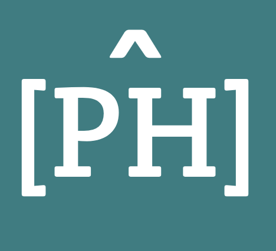

Programming Historian en français : les valeurs de la science ouverte au service de la formation en humanités numériques
Journée des logiciels libres en Archives, Bibliothèques et Centres de documentation (LibreABC)
9 septembre 2025 - Musée d'ethnographie de Genève
Alexandre Wauthier et Marie Flesch
Thank you!
¡Gracias!
Merci !
Obrigado!
➡️ Pour télécharger le support en PDF : alexandrewa.github.io/LibreABC-PH-2025?print-pdf et imprimer la page en PDF (ou ctrl + P)
➡️ Lien vers le dépôt GitHub  LibreABC-PH-2025
LibreABC-PH-2025